- After studying this chapter, you will be able to:
- Identify the primary functions of blood, its fluid and cellular components, and its physical characteristics
- Identify the most important proteins and other solutes present in blood plasma
- Describe the formation of the formed element components of blood
- Discuss the structure and function of red blood cells and hemoglobin
- Classify and characterize white blood cells
- Describe the structure of platelets and explain the process of hemostasis
- Explain the significance of AB and
- Rh blood groups in blood transfusions
- Discuss a variety of blood disorders
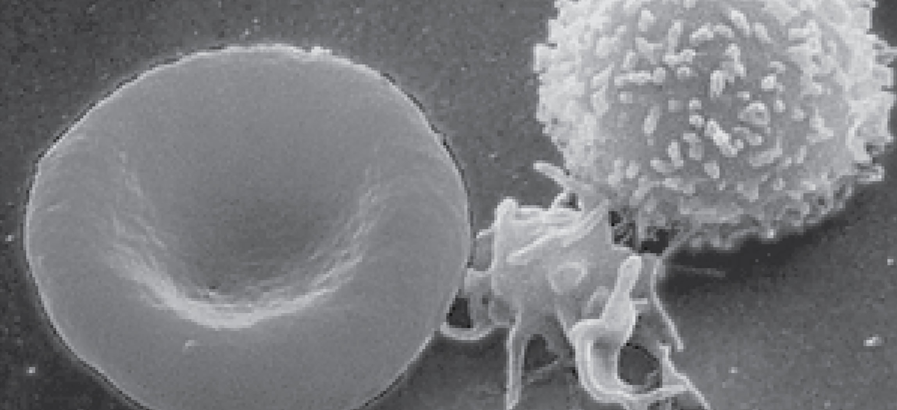
- Identify the primary functions of blood in transportation, defense, and maintenance of homeostasis
- Name the fluid component of blood and the three major types of formed elements, and identify their relative proportions in a blood sample
- Discuss the unique physical characteristics of blood
- Identify the composition of blood plasma, including its most important solutes and plasma proteins
Recall thatbloodis a connective tissue. Like all connective tissues, it is made up of cellular elements and an extracellular matrix. The cellular elements—referred to as theformed elements—includered blood cells (RBCs),white blood cells (WBCs), and cell fragments calledplatelets. The extracellular matrix, calledplasma, makes blood unique among connective tissues because it is fluid. This fluid, which is mostly water, perpetually suspends the formed elements and enables them to circulate throughout the body within the cardiovascular system.
The primary function of blood is to deliver oxygen and nutrients to and remove wastes from body cells, but that is only the beginning of the story. The specific functions of blood also include defense, distribution of heat, and maintenance of homeostasis.
Nutrients from the foods you eat are absorbed in the digestive tract. Most of these travel in the bloodstream directly to the liver, where they are processed and released back into the bloodstream for delivery to body cells. Oxygen from the air you breathe diffuses into the blood, which moves from the lungs to the heart, which then pumps it out to the rest of the body. Moreover, endocrine glands scattered throughout the body release their products, called hormones, into the bloodstream, which carries them to distant target cells. Blood also picks up cellular wastes and byproducts, and transports them to various organs for removal. For instance, blood moves carbon dioxide to the lungs for exhalation from the body, and various waste products are transported to the kidneys and liver for excretion from the body in the form of urine or bile.
Many types of WBCs protect the body from external threats, such as disease-causing bacteria that have entered the bloodstream in a wound. Other WBCs seek out and destroy internal threats, such as cells with mutated DNA that could multiply to become cancerous, or body cells infected with viruses.
When damage to the vessels results in bleeding, blood platelets and certain proteins dissolved in the plasma, the fluid portion of the blood, interact to block the ruptured areas of the blood vessels involved. This protects the body from further blood loss.
#### Maintenance of Homeostasis
Recall that body temperature is regulated via a classic negative-feedback loop. If you were exercising on a warm day, your rising core body temperature would trigger several homeostatic mechanisms, including increased transport of blood from your core to your body periphery, which is typically cooler. As blood passes through the vessels of the skin, heat would be dissipated to the environment, and the blood returning to your body core would be cooler. In contrast, on a cold day, blood is diverted away from the skin to maintain a warmer body core. In extreme cases, this may result in frostbite.
Blood also helps to maintain the chemical balance of the body. Proteins and other compounds in blood act as buffers, which thereby help to regulate the pH of body tissues. Blood also helps to regulate the water content of body cells.
You have probably had blood drawn from a superficial vein in your arm, which was then sent to a lab for analysis. Some of the most common blood tests—for instance, those measuring lipid or glucose levels in plasma—determine which substances are present within blood and in what quantities. Other blood tests check for the composition of the blood itself, including the quantities and types of formed elements.
One such test, called ahematocrit, measures the percentage of RBCs, clinically known as erythrocytes, in a blood sample. It is performed by spinning the blood sample in a specialized centrifuge, a process that causes the heavier elements suspended within the blood sample to separate from the lightweight, liquid plasma (Figure \(\PageIndex{1}\) ). Because the heaviest elements in blood are the erythrocytes, these settle at the very bottom of the hematocrit tube. Located above the erythrocytes is a pale, thin layer composed of the remaining formed elements of blood. These are the WBCs, clinically known as leukocytes, and the platelets, cell fragments also called thrombocytes. This layer is referred to as thebuffy coatbecause of its color; it normally constitutes less than 1 percent of a blood sample. Above the buffy coat is the blood plasma, normally a pale, straw-colored fluid, which constitutes the remainder of the sample.
The volume of erythrocytes after centrifugation is also commonly referred to aspacked cell volume (PCV). In normal blood, about 45 percent of a sample is erythrocytes. The hematocrit of any one sample can vary significantly, however, about 36–50 percent, according to gender and other factors. Normal hematocrit values for females range from 37 to 47, with a mean value of 41; for males, hematocrit ranges from 42 to 52, with a mean of 47. The percentage of other formed elements, the WBCs and platelets, is extremely small so it is not normally considered with the hematocrit. So the mean plasma percentage is the percent of blood that is not erythrocytes: for females, it is approximately 59 (or 100 minus 41), and for males, it is approximately 53 (or 100 minus 47).
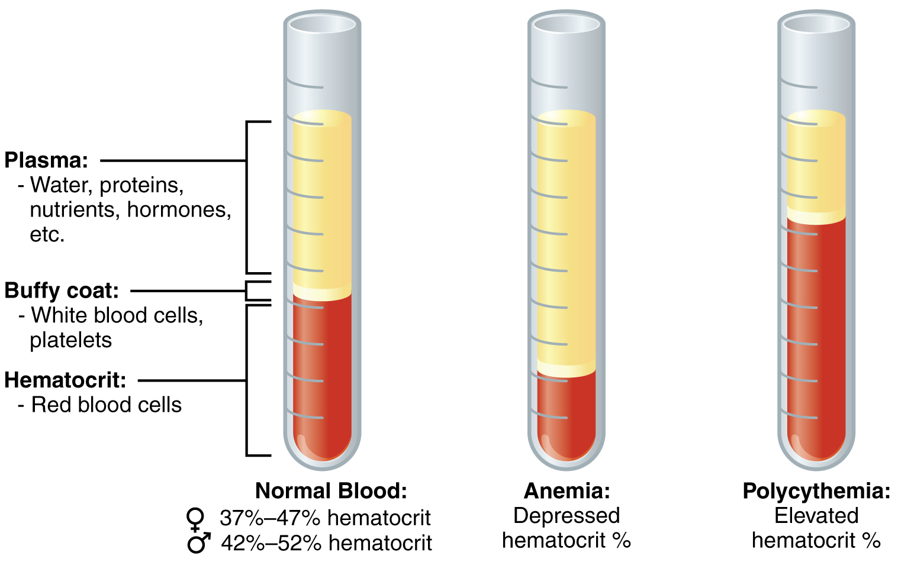
When you think about blood, the first characteristic that probably comes to mind is its color. Blood that has just taken up oxygen in the lungs is bright red, and blood that has released oxygen in the tissues is a more dusky red. This is because hemoglobin is a pigment that changes color, depending upon the degree of oxygen saturation.
Blood is viscous and somewhat sticky to the touch. It has a viscosity approximately five times greater than water. Viscosity is a measure of a fluid’s thickness or resistance to flow, and is influenced by the presence of the plasma proteins and formed elements within the blood. The viscosity of blood has a dramatic impact on blood pressure and flow. Consider the difference in flow between water and honey. The more viscous honey would demonstrate a greater resistance to flow than the less viscous water. The same principle applies to blood.
The normal temperature of blood is slightly higher than normal body temperature—about 38 °C (or 100.4 °F), compared to 37 °C (or 98.6 °F) for an internal body temperature reading, although daily variations of 0.5 °C are normal. Although the surface of blood vessels is relatively smooth, as blood flows through them, it experiences some friction and resistance, especially as vessels age and lose their elasticity, thereby producing heat. This accounts for its slightly higher temperature.
The pH of blood averages about 7.4; however, it can range from 7.35 to 7.45 in a healthy person. Blood is therefore somewhat more basic (alkaline) on a chemical scale than pure water, which has a pH of 7.0. Blood contains numerous buffers that actually help to regulate pH.
Blood constitutes approximately 8 percent of adult body weight. Adult males typically average about 5 to 6 liters of blood. Females average 4–5 liters.
Like other fluids in the body, plasma is composed primarily of water: In fact, it is about 92 percent water. Dissolved or suspended within this water is a mixture of substances, most of which are proteins. There are literally hundreds of substances dissolved or suspended in the plasma, although many of them are found only in very small quantities.
Visit thissitefor a list of normal levels established for many of the substances found in a sample of blood. Serum, one of the specimen types included, refers to a sample of plasma after clotting factors have been removed. What types of measurements are given for levels of glucose in the blood?
About 7 percent of the volume of plasma—nearly all that is not water—is made of proteins. These include several plasma proteins (proteins that are unique to the plasma), plus a much smaller number of regulatory proteins, including enzymes and some hormones. The major components of plasma are summarized in Figure 18.3.
The three major groups of plasma proteins are as follows:
#### Other Plasma Solutes
In addition to proteins, plasma contains a wide variety of other substances. These include various electrolytes, such as sodium, potassium, and calcium ions; dissolved gases, such as oxygen, carbon dioxide, and nitrogen; various organic nutrients, such as vitamins, lipids, glucose, and amino acids; and metabolic wastes. All of these nonprotein solutes combined contribute approximately 1 percent to the total volume of plasma.
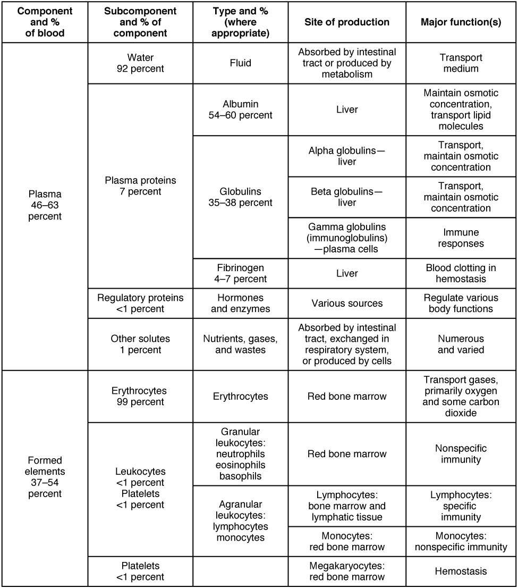
| Component and % of blood | Subcomponent and % of component | Type and % (where appropriate) | Site of production | Major function(s) |
|---|---|---|---|---|
| Water92 percent | Fluid | Absorbed by intestinal tract or produced by metabolism | Transportmedium | |
| Albumin54-60 percent | Liver | Maintain osmotic concentration, transport lipid molecules | ||
| Plasma proteins7 percent | Alpha globulins— liver | Transport, maintain osmotic concentration | ||
| Plasma46-63percent | Globulins 35-38 percent | Beta globulins— liver | Transport, maintain osmotic concentration | |
| Gamma globulins (immunoglobulins) —plasma cells | Immuneresponses | |||
| Fibrinogen4-7 percent | Liver | Blood clotting in hemostasis | ||
| Regulatory proteins <1 percent | Hormones and enzymes | Various sources | Regulate various body functions | |
| Other solutes1 percent | Nutrients, gases, and wastes | Absorbed by intestinal tract, exchanged in respiratory system, or produced by cells | Numerous and varied | |
| Erythrocytes99 percent | Erythrocytes | Red bone marrow | Transport gases, primarily oxygen and some carbon dioxide | |
| Formedelements37-54 | Leukocytes <1 percent Platelets <1 percent | Granularleukocytes:neutrophilseosinophilsbasophils | Red bone marrow | Nonspecificimmunity |
| percent | Agranularleukocytes:lymphocytesmonocytes | Lymphocytes: bone marrow and lymphatic tissue | Lymphocytes:specificimmunity | |
| Monocytes: red bone marrow | Monocytes: nonspecific immunity | |||
| Platelets <1 percent | Megakaryocytes: red bone marrow | Hemostasis |
Component and % of blood
Subcomponent and % of component
Type and % (where appropriate)
Absorbed by intestinal tract or produced by metabolism
Maintain osmotic concentration, transport lipid molecules
Alpha globulins— liver
Transport, maintain osmotic concentration
Globulins 35-38 percent
Beta globulins— liver
Transport, maintain osmotic concentration
Gamma globulins (immunoglobulins) —plasma cells
Blood clotting in hemostasis
Regulatory proteins <1 percent
Regulate various body functions
Nutrients, gases, and wastes
Absorbed by intestinal tract, exchanged in respiratory system, or produced by cells
Transport gases, primarily oxygen and some carbon dioxide
Leukocytes <1 percent Platelets <1 percent
Lymphocytes: bone marrow and lymphatic tissue
Monocytes: red bone marrow
Monocytes: nonspecific immunity
Megakaryocytes: red bone marrow
#### Phlebotomy and Medical Lab Technology
Phlebotomists are professionals trained to draw blood (phleb- = “a blood vessel”; -tomy = “to cut”). When more than a few drops of blood are required, phlebotomists perform a venipuncture, typically of a surface vein in the arm. They perform a capillary stick on a finger, an earlobe, or the heel of an infant when only a small quantity of blood is required. An arterial stick is collected from an artery and used to analyze blood gases. After collection, the blood may be analyzed by medical laboratories or perhaps used for transfusions, donations, or research. While many allied health professionals practice phlebotomy, the American Society of Phlebotomy Technicians issues certificates to individuals passing a national examination, and some large labs and hospitals hire individuals expressly for their skill in phlebotomy.
Medical or clinical laboratories employ a variety of individuals in technical positions:
📖 OpenStax Anatomy & Physiology 2e, Section 18.2. openstax.org · CC BY 4.0
- Trace the generation of the formed elements of blood from bone marrow stem cells
- Discuss the role of hemopoietic growth factors in promoting the production of the formed elements
The lifespan of the formed elements is very brief. Although one type of leukocyte called memory cells can survive for years, most erythrocytes, leukocytes, and platelets normally live only a few hours to a few weeks. Thus, the body must form new blood cells and platelets quickly and continuously. When you donate a unit of blood during a blood drive (approximately 475 mL, or about 1 pint), your body typically replaces the donated plasma within 24 hours, but it takes about 4 to 6 weeks to replace the blood cells. This restricts the frequency with which donors can contribute their blood. The process by which this replacement occurs is calledhemopoiesis, or hematopoiesis (from the Greek root haima- = “blood”; -poiesis = “production”).
Prior to birth, hemopoiesis occurs in a number of tissues, beginning with the yolk sac of the developing embryo, and continuing in the fetal liver, spleen, lymphatic tissue, and eventually the red bone marrow. Following birth, most hemopoiesis occurs in the red marrow, a connective tissue within the spaces of spongy (cancellous) bone tissue. In children, hemopoiesis can occur in the medullary cavity of long bones; in adults, the process is largely restricted to the cranial and pelvic bones, the vertebrae, the sternum, and the proximal epiphyses of the femur and humerus.
Throughout adulthood, the liver and spleen maintain their ability to generate the formed elements. This process is referred to as extramedullary hemopoiesis (meaning hemopoiesis outside the medullary cavity of adult bones). When a disease such as bone cancer destroys the bone marrow, causing hemopoiesis to fail, extramedullary hemopoiesis may be initiated.
All formed elements arise from stem cells of the red bone marrow. Recall that stem cells undergo mitosis plus cytokinesis (cellular division) to give rise to new daughter cells: One of these remains a stem cell and the other differentiates into one of any number of diverse cell types. Stem cells may be viewed as occupying a hierarchal system, with some loss of the ability to diversify at each step. Thetotipotent stem cellis the zygote, or fertilized egg. The totipotent (toti- = “all”) stem cell gives rise to all cells of the human body. The next level is thepluripotent stem cell, which gives rise to multiple types of cells of the body and some of the supporting fetal membranes. Beneath this level, the mesenchymal cell is a stem cell that develops only into types of connective tissue, including fibrous connective tissue, bone, cartilage, and blood, but not epithelium, muscle, and nervous tissue. One step lower on the hierarchy of stem cells is thehematopoietic stem cell, orhemocytoblast. All of the formed elements of blood originate from this specific type of cell.
Hemopoiesis begins when the hematopoietic stem cell is exposed to appropriate chemical stimuli collectively calledhemopoietic growth factors, which prompt it to divide and differentiate. One daughter cell remains a hematopoietic stem cell, allowing hemopoiesis to continue. The other daughter cell becomes either of two types of more specialized stem cells (Figure \(\PageIndex{1}\) ):
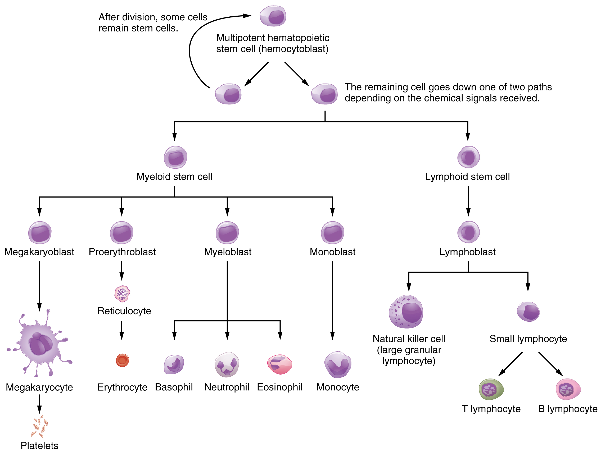
Lymphoid and myeloid stem cells do not immediately divide and differentiate into mature formed elements. As you can see in Figure 18.4, there are several intermediate stages of precursor cells (literally, forerunner cells), many of which can be recognized by their names, which have the suffix -blast. For instance, megakaryoblasts are the precursors of megakaryocytes, and proerythroblasts become reticulocytes, which eject their nucleus and most other organelles before maturing into erythrocytes.
Development from stem cells to precursor cells to mature cells is again initiated by hemopoietic growth factors. These include the following:
In its original intent, the term blood doping was used to describe the practice of injecting by transfusion supplemental RBCs into an individual, typically to enhance performance in a sport. Additional RBCs would deliver more oxygen to the tissues, providing extra aerobic capacity, clinically referred to as VO2max. The source of the cells was either from the recipient (autologous) or from a donor with compatible blood (homologous). This practice was aided by the well-developed techniques of harvesting, concentrating, and freezing of the RBCs that could be later thawed and injected, yet still retain their functionality. These practices are considered illegal in virtually all sports and run the risk of infection, significantly increasing the viscosity of the blood and the potential for transmission of blood-borne pathogens if the blood was collected from another individual.
With the development of synthetic EPO in the 1980s, it became possible to provide additional RBCs by artificially stimulating RBC production in the bone marrow. Originally developed to treat patients suffering from anemia, renal failure, or cancer treatment, large quantities of EPO can be generated by recombinant DNA technology. Synthetic EPO is injected under the skin and can increase hematocrit for many weeks. It may also induce polycythemia and raise hematocrit to 70 or greater. This increased viscosity raises the resistance of the blood and forces the heart to pump more powerfully; in extreme cases, it has resulted in death. Other drugs such as cobalt II chloride have been shown to increase natural EPO gene expression. Blood doping has become problematic in many sports, especially cycling. Lance Armstrong, winner of seven Tour de France and many other cycling titles, was stripped of his victories and admitted to blood doping in 2013.
Watch this video to see doctors discuss the dangers of blood doping in sports. What are the some potential side effects of blood doping?
Sometimes, a healthcare provider will order abone marrow biopsy, a diagnostic test of a sample of red bone marrow, or abone marrow transplant, a treatment in which a donor’s healthy bone marrow—and its stem cells—replaces the faulty bone marrow of a patient. These tests and procedures are often used to assist in the diagnosis and treatment of various severe forms of anemia, such as thalassemia major and sickle cell anemia, as well as some types of cancer, specifically leukemia.
In the past, when a bone marrow sample or transplant was necessary, the procedure would have required inserting a large-bore needle into the region near the iliac crest of the pelvic bones (os coxae). This location was preferred, since its location close to the body surface makes it more accessible, and it is relatively isolated from most vital organs. Unfortunately, the procedure is quite painful.
Now, direct sampling of bone marrow can often be avoided. In many cases, stem cells can be isolated in just a few hours from a sample of a patient’s blood. The isolated stem cells are then grown in culture using the appropriate hemopoietic growth factors, and analyzed or sometimes frozen for later use.
For an individual requiring a transplant, a matching donor is essential to prevent the immune system from destroying the donor cells—a phenomenon known as tissue rejection. To treat patients with bone marrow transplants, it is first necessary to destroy the patient’s own diseased marrow through radiation and/or chemotherapy. Donor bone marrow stem cells are then intravenously infused. From the bloodstream, they establish themselves in the recipient’s bone marrow.
📖 OpenStax Anatomy & Physiology 2e, Section 18.3. openstax.org · CC BY 4.0
- Describe the anatomy of erythrocytes
- Discuss the various steps in the lifecycle of an erythrocyte
- Explain the composition and function of hemoglobin
Theerythrocyte, commonly known as a red blood cell (or RBC), is by far the most common formed element: A single drop of blood contains millions of erythrocytes and just thousands of leukocytes. Specifically, males have about 5.4 million erythrocytes per microliter (µL) of blood, and females have approximately 4.8 million perµL. In fact, erythrocytes are estimated to make up about 25 percent of the total cells in the body. As you can imagine, they are quite small cells, with a mean diameter of only about 7–8 micrometers (µm) (Figure \(\PageIndex{1}\) ). The primary functions of erythrocytes are to pick up inhaled oxygen from the lungs and transport it to the body’s tissues, and to pick up some (about 24 percent) carbon dioxide waste at the tissues and transport it to the lungs for exhalation. Erythrocytes remain within the vascular network. Although leukocytes typically leave the blood vessels to perform their defensive functions, movement of erythrocytes from the blood vessels is abnormal.
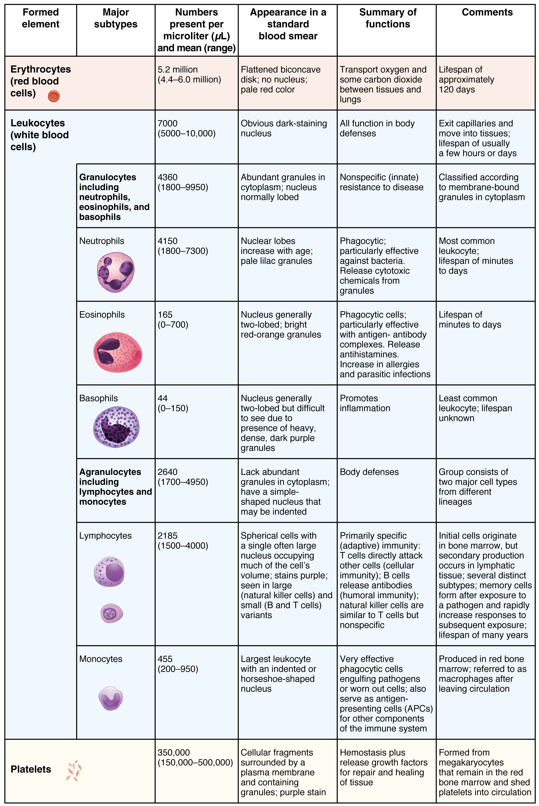
As an erythrocyte matures in the red bone marrow, it extrudes its nucleus and most of its other organelles. During the first day or two that it is in the circulation, an immature erythrocyte, known as areticulocyte, will still typically contain remnants of organelles. Reticulocytes should comprise approximately 1–2 percent of the erythrocyte count and provide a rough estimate of the rate of RBC production, with abnormally low or high rates indicating deviations in the production of these cells. These remnants, primarily of networks (reticulum) of ribosomes, are quickly shed, however, and mature, circulating erythrocytes have few internal cellular structural components. Lacking mitochondria, for example, they rely on anaerobic respiration. This means that they do not utilize any of the oxygen they are transporting, so they can deliver it all to the tissues. They also lack endoplasmic reticula and do not synthesize proteins. Erythrocytes do, however, contain some structural proteins that help the blood cells maintain their unique structure and enable them to change their shape to squeeze through capillaries. This includes the protein spectrin, a cytoskeletal protein element.
Erythrocytes are biconcave disks; that is, they are plump at their periphery and very thin in the center (Figure \(\PageIndex{2}\)). Since they lack most organelles, there is more interior space for the presence of the hemoglobin molecules that, as you will see shortly, transport gases. The biconcave shape also provides a greater surface area across which gas exchange can occur, relative to its volume; a sphere of a similar diameter would have a lower surface area-to-volume ratio. In the capillaries, the oxygen carried by the erythrocytes can diffuse into the plasma and then through the capillary walls to reach the cells, whereas some of the carbon dioxide produced by the cells as a waste product diffuses into the capillaries to be picked up by the erythrocytes. Capillary beds are extremely narrow, slowing the passage of the erythrocytes and providing an extended opportunity for gas exchange to occur. However, the space within capillaries can be so minute that, despite their own small size, erythrocytes may have to fold in on themselves if they are to make their way through. Fortunately, their structural proteins like spectrin are flexible, allowing them to bend over themselves to a surprising degree, then spring back again when they enter a wider vessel. In wider vessels, erythrocytes may stack up much like a roll of coins, forming a rouleaux, from the French word for “roll.”
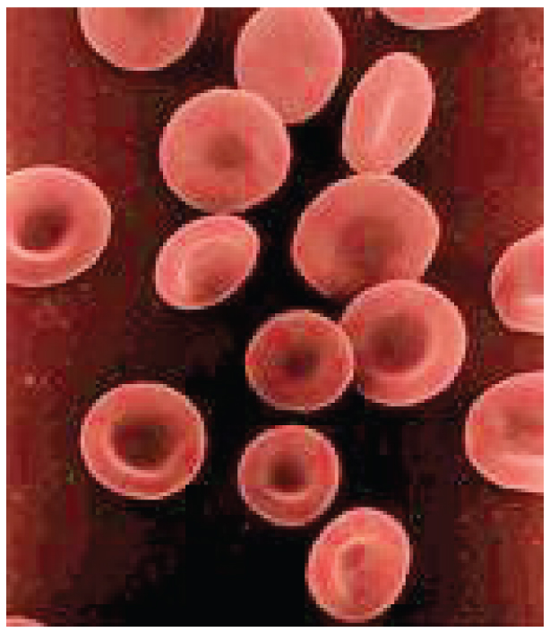
Hemoglobinis a large molecule made up of proteins and iron. It consists of four folded chains of a protein calledglobin, designated alpha 1 and 2, and beta 1 and 2 (Figure \(\PageIndex{3}\)a). Each of these globin molecules is bound to a red pigment molecule calledheme, which contains an ion of iron (Fe2+) (Figure \(\PageIndex{3}\)b).
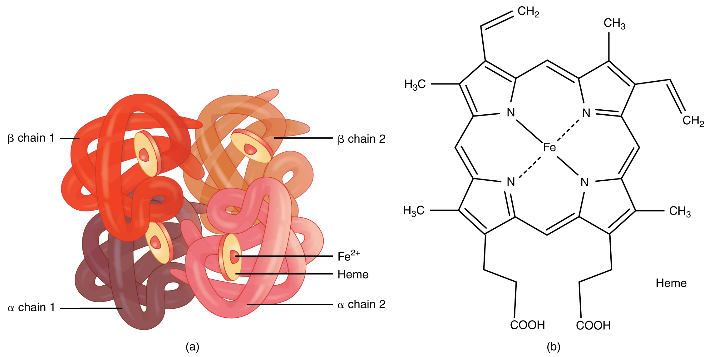
Each iron ion in the heme can bind to one oxygen molecule; therefore, each hemoglobin molecule can transport four oxygen molecules. An individual erythrocyte may contain about 300 million hemoglobin molecules, and therefore can bind to and transport up to 1.2 billion oxygen molecules (see Figure 18.7b).
In the lungs, hemoglobin picks up oxygen, which binds to the iron ions, formingoxyhemoglobin. The bright red, oxygenated hemoglobin travels to the body tissues, where it releases some of the oxygen molecules, becoming darker reddeoxyhemoglobin, sometimes referred to as reduced hemoglobin. Oxygen release depends on the need for oxygen in the surrounding tissues, so hemoglobin rarely if ever leaves all of its oxygen behind. In the capillaries, carbon dioxide enters the bloodstream. About 76 percent dissolves in the plasma, some of it remaining as dissolved CO2, and the remainder forming bicarbonate ion. About 23–24 percent of it binds to the amino acids in hemoglobin, forming a molecule known ascarbaminohemoglobin. From the capillaries, the hemoglobin carries carbon dioxide back to the lungs, where it releases it for exchange of oxygen.
Changes in the levels of RBCs can have significant effects on the body’s ability to effectively deliver oxygen to the tissues. Ineffective hematopoiesis results in insufficient numbers of RBCs and results in one of several forms of anemia. An overproduction of RBCs produces a condition called polycythemia. The primary drawback with polycythemia is not a failure to directly deliver enough oxygen to the tissues, but rather the increased viscosity of the blood, which makes it more difficult for the heart to circulate the blood.
In patients with insufficient hemoglobin, the tissues may not receive sufficient oxygen, resulting in another form of anemia. In determining oxygenation of tissues, the value of greatest interest in healthcare is the percent saturation; that is, the percentage of hemoglobin sites occupied by oxygen in a patient’s blood. Clinically this value is commonly referred to simply as “percent sat.”
Percent saturation is normally monitored using a device known as a pulse oximeter, which is applied to a thin part of the body, typically the tip of the patient’s finger. The device works by sending two different wavelengths of light (one red, the other infrared) through the finger and measuring the light with a photodetector as it exits. Hemoglobin absorbs light differentially depending upon its saturation with oxygen. The machine calibrates the amount of light received by the photodetector against the amount absorbed by the partially oxygenated hemoglobin and presents the data as percent saturation. Normal pulse oximeter readings range from 95–100 percent. Lower percentages reflecthypoxemia, or low blood oxygen. The term hypoxia is more generic and simply refers to low oxygen levels. Oxygen levels are also directly monitored from free oxygen in the plasma typically following an arterial stick. When this method is applied, the amount of oxygen present is expressed in terms of partial pressure of oxygen or simply PO2or PO2 and is typically recorded in units of millimeters of mercury, mm Hg.
The kidneys filter about 180 liters (~380 pints) of blood in an average adult each day, or about 20 percent of the total resting volume, and thus serve as ideal sites for receptors that determine oxygen saturation. In response to hypoxemia, less oxygen will exit the vessels supplying the kidney, resulting in hypoxia (low oxygen concentration) in the tissue fluid of the kidney where oxygen concentration is actually monitored. Interstitial fibroblasts within the kidney secrete EPO, thereby increasing erythrocyte production and restoring oxygen levels. In a classic negative-feedback loop, as oxygen saturation rises, EPO secretion falls, and vice versa, thereby maintaining homeostasis. Populations dwelling at high elevations, with inherently lower levels of oxygen in the atmosphere, naturally maintain a hematocrit higher than people living at sea level. Consequently, people traveling to high elevations may experience symptoms of hypoxemia, such as fatigue, headache, and shortness of breath, for a few days after their arrival. In response to the hypoxemia, the kidneys secrete EPO to step up the production of erythrocytes until homeostasis is achieved once again. To avoid the symptoms of hypoxemia, or altitude sickness, mountain climbers typically rest for several days to a week or more at a series of camps situated at increasing elevations to allow EPO levels and, consequently, erythrocyte counts to rise. When climbing the tallest peaks, such as Mt. Everest and K2 in the Himalayas, many mountain climbers rely upon bottled oxygen as they near the summit.
Production of erythrocytes in the marrow occurs at the staggering rate of more than 2 million cells per second. For this production to occur, a number of raw materials must be present in adequate amounts. These include the same nutrients that are essential to the production and maintenance of any cell, such as glucose, lipids, and amino acids. However, erythrocyte production also requires several trace elements:
The erythrocyte lifecycle is summarized in Figure \(\PageIndex{4}\).
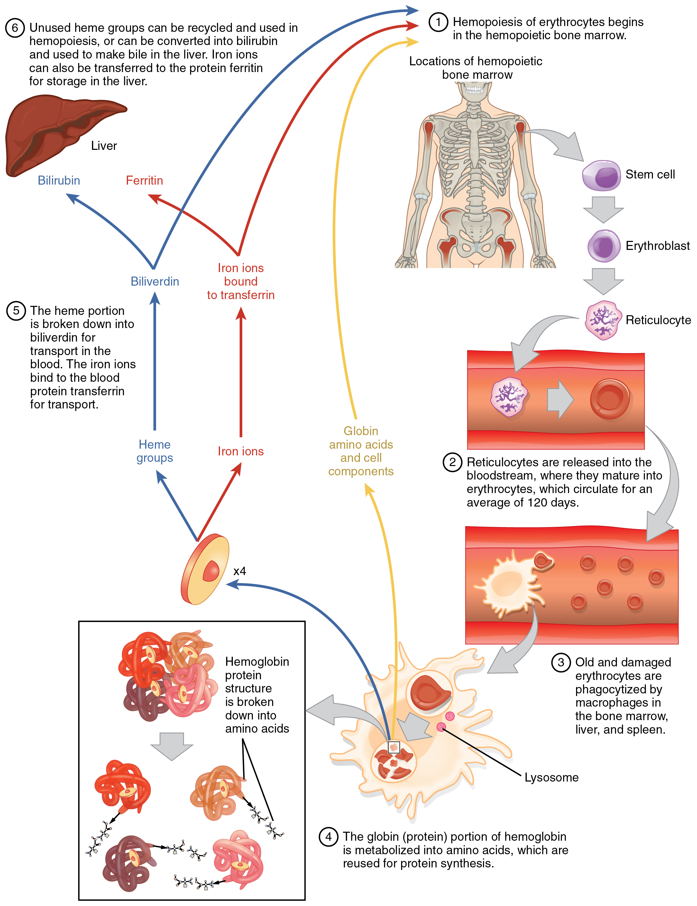
The size, shape, and number of erythrocytes, and the number of hemoglobin molecules can have a major impact on a person’s health. When the number of RBCs or hemoglobin is deficient, the general condition is calledanemia. There are more than 400 types of anemia and more than 3.5 million Americans suffer from this condition. Anemia can be broken down into three major groups: those caused by blood loss, those caused by faulty or decreased RBC production, and those caused by excessive destruction of RBCs. Clinicians often use two groupings in diagnosis: The kinetic approach focuses on evaluating the production, destruction, and removal of RBCs, whereas the morphological approach examines the RBCs themselves, paying particular emphasis to their size. A common test is the mean corpuscle volume (MCV), which measures size. Normal-sized cells are referred to as normocytic, smaller-than-normal cells are referred to as microcytic, and larger-than-normal cells are referred to as macrocytic. Reticulocyte counts are also important and may reveal inadequate production of RBCs. The effects of the various anemias are widespread, because reduced numbers of RBCs or hemoglobin will result in lower levels of oxygen being delivered to body tissues. Since oxygen is required for tissue functioning, anemia produces fatigue, lethargy, and an increased risk for infection. An oxygen deficit in the brain impairs the ability to think clearly, and may prompt headaches and irritability. Lack of oxygen leaves the patient short of breath, even as the heart and lungs work harder in response to the deficit.
Blood loss anemias are fairly straightforward. In addition to bleeding from wounds or other lesions, these forms of anemia may be due to ulcers, hemorrhoids, inflammation of the stomach (gastritis), and some cancers of the gastrointestinal tract. The excessive use of aspirin or other nonsteroidal anti-inflammatory drugs such as ibuprofen can trigger ulceration and gastritis. Excessive menstruation and loss of blood during childbirth are also potential causes.
Anemias caused by faulty or decreased RBC production include sickle cell anemia, iron deficiency anemia, vitamin deficiency anemia, and diseases of the bone marrow and stem cells.
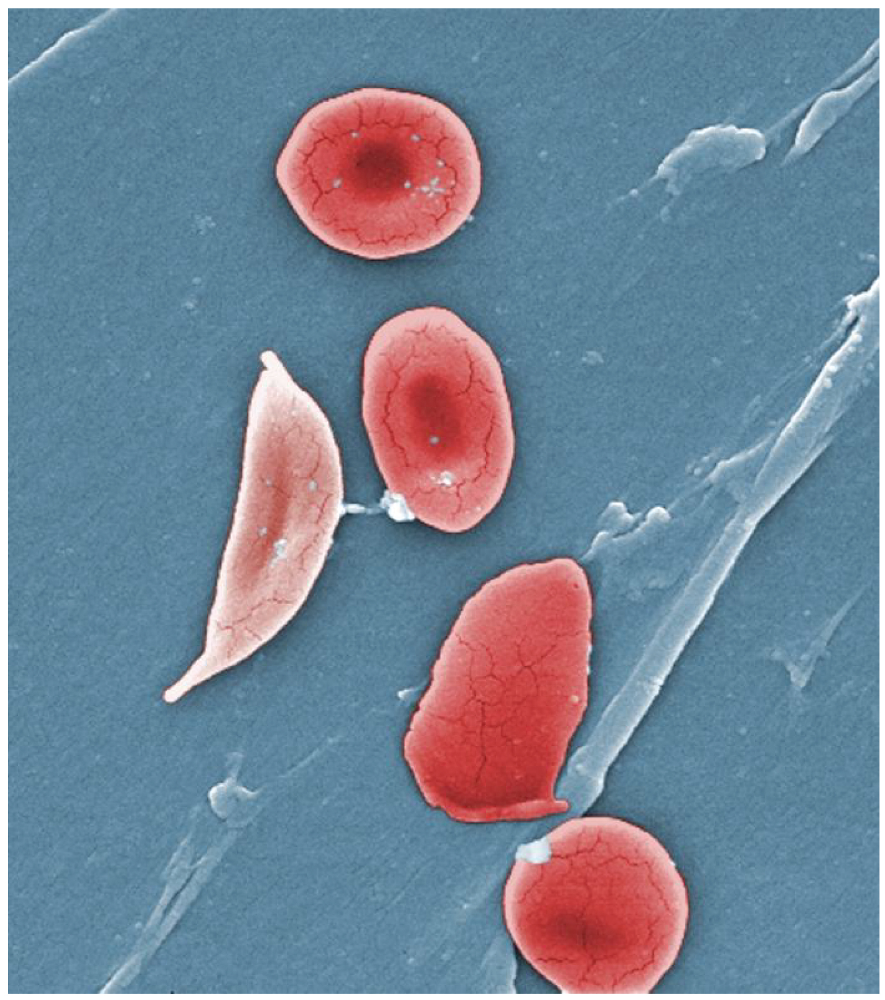
In contrast to anemia, an elevated RBC count is calledpolycythemiaand is detected in a patient’s elevated hematocrit. It can occur transiently in a person who is dehydrated; when water intake is inadequate or water losses are excessive, the plasma volume falls. As a result, the hematocrit rises. For reasons mentioned earlier, a mild form of polycythemia is chronic but normal in people living at high altitudes. Some elite athletes train at high elevations specifically to induce this phenomenon. Finally, a type of bone marrow disease called polycythemia vera (from the Greek vera = “true”) causes an excessive production of immature erythrocytes. Polycythemia vera can dangerously elevate the viscosity of blood, raising blood pressure and making it more difficult for the heart to pump blood throughout the body. It is a relatively rare disease that occurs more often in males than in females, and is more likely to be present in elderly patients those over 60 years of age.
📖 OpenStax Anatomy & Physiology 2e, Section 18.4. openstax.org · CC BY 4.0
- Describe the general characteristics of leukocytes
- Classify leukocytes according to their lineage, their main structural features, and their primary functions
- Discuss the most common malignancies involving leukocytes
- Identify the lineage, basic structure, and function of platelets
Theleukocyte, commonly known as a white blood cell (or WBC), is a major component of the body’s defenses against disease. Leukocytes protect the body against invading microorganisms and body cells with mutated DNA, and they clean up debris. Platelets are essential for the repair of blood vessels when damage to them has occurred; they also provide growth factors for healing and repair.
Although leukocytes and erythrocytes both originate from hematopoietic stem cells in the bone marrow, they are very different from each other in many significant ways. For instance, leukocytes are far less numerous than erythrocytes: Typically there are only 5000 to 10,000 perµL. They are also larger than erythrocytes and are the only formed elements that are complete cells, possessing a nucleus and organelles. And although there is just one type of erythrocyte, there are many types of leukocytes. Most of these types have a much shorter lifespan than that of erythrocytes, some as short as a few hours or even a few minutes in the case of acute infection.
One of the most distinctive characteristics of leukocytes is their movement. Whereas erythrocytes spend their days circulating within the blood vessels, leukocytes routinely leave the bloodstream to perform their defensive functions in the body’s tissues. For leukocytes, the vascular network is simply a highway they travel and soon exit to reach their true destination. When they arrive, they are often given distinct names, such as macrophage or microglia, depending on their function. As shown in Figure 18.10, they leave the capillaries—the smallest blood vessels—or other small vessels through a process known asemigration(from the Latin for “removal”) ordiapedesis(dia- = “through”; -pedan = “to leap”) in which they squeeze through adjacent cells in a blood vessel wall.
Once they have exited the capillaries, some leukocytes will take up fixed positions in lymphatic tissue, bone marrow, the spleen, the thymus, or other organs. Others will move about through the tissue spaces very much like amoebas, continuously extending their plasma membranes, sometimes wandering freely, and sometimes moving toward the direction in which they are drawn by chemical signals. This attracting of leukocytes occurs because ofpositive chemotaxis(literally “movement in response to chemicals”), a phenomenon in which injured or infected cells and nearby leukocytes emit the equivalent of a chemical “911” call, attracting more leukocytes to the site. In clinical medicine, the differential counts of the types and percentages of leukocytes present are often key indicators in making a diagnosis and selecting a treatment.
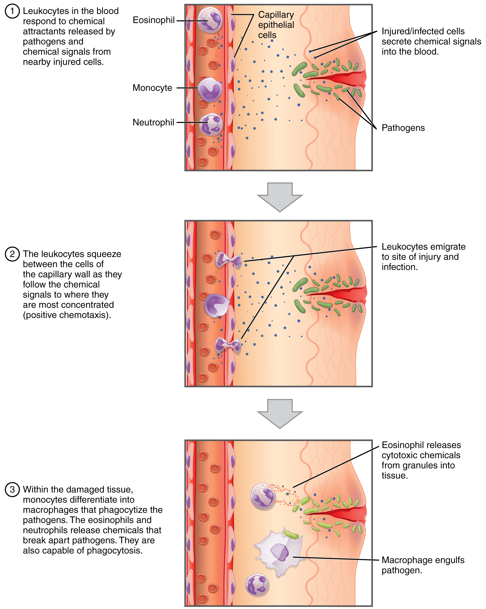
When scientists first began to observe stained blood slides, it quickly became evident that leukocytes could be divided into two groups, according to whether their cytoplasm contained highly visible granules:
#### Granular Leukocytes
We will consider the granular leukocytes in order from most common to least common. All of these are produced in the red bone marrow and have a short lifespan of hours to days. They typically have a lobed nucleus and are classified according to which type of stain best highlights their granules (Figure 18.11).
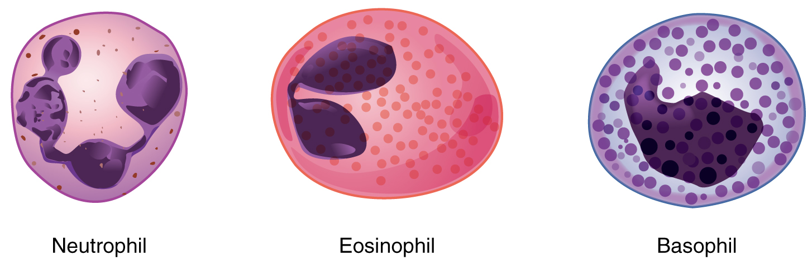
The most common of all the leukocytes,neutrophilswill normally comprise 50–70 percent of total leukocyte count. They are 10–12µm in diameter, significantly larger than erythrocytes. They are called neutrophils because their granules show up most clearly with stains that are chemically neutral (neither acidic nor basic). The granules are numerous but quite fine and normally appear light lilac. The nucleus has a distinct lobed appearance and may have two to five lobes, the number increasing with the age of the cell. Older neutrophils have increasing numbers of lobes and are often referred to aspolymorphonuclear(a nucleus with many forms), or simply “polys.” Younger and immature neutrophils begin to develop lobes and are known as “bands.”
Neutrophils are rapid responders to the site of infection and are efficient phagocytes with a preference for bacteria. Their granules includelysozyme, an enzyme capable of lysing, or breaking down, bacterial cell walls; oxidants such as hydrogen peroxide; anddefensins, proteins that bind to and puncture bacterial and fungal plasma membranes, so that the cell contents leak out. Abnormally high counts of neutrophils indicate infection and/or inflammation, particularly triggered by bacteria, but are also found in burn patients and others experiencing unusual stress. A burn injury increases the proliferation of neutrophils in order to fight off infection that can result from the destruction of the barrier of the skin. Low counts may be caused by drug toxicity and other disorders, and may increase an individual’s susceptibility to infection.
Eosinophilstypically represent 2–4 percent of total leukocyte count. They are also 10–12µm in diameter. The granules of eosinophils stain best with an acidic stain known as eosin. The nucleus of the eosinophil will typically have two to three lobes and, if stained properly, the granules will have a distinct red to orange color.
The granules of eosinophils include antihistamine molecules, which counteract the activities of histamines, inflammatory chemicals produced by basophils and mast cells. Some eosinophil granules contain molecules toxic to parasitic worms, which can enter the body through the integument, or when an individual consumes raw or undercooked fish or meat. Eosinophils are also capable of phagocytosis and are particularly effective when antibodies bind to the target and form an antigen-antibody complex. High counts of eosinophils are typical of patients experiencing allergies, parasitic worm infestations, and some autoimmune diseases. Low counts may be due to drug toxicity and stress.
Basophilsare the least common leukocytes, typically comprising less than one percent of the total leukocyte count. They are slightly smaller than neutrophils and eosinophils at 8–10µm in diameter. The granules of basophils stain best with basic (alkaline) stains. Basophils contain large granules that pick up a dark blue stain and are so common they may make it difficult to see the two-lobed nucleus.
In general, basophils intensify the inflammatory response. They share this trait with mast cells. In the past, mast cells were considered to be basophils that left the circulation. However, this appears not to be the case, as the two cell types develop from different lineages.
The granules of basophils release histamines, which contribute to inflammation, and heparin, which opposes blood clotting. High counts of basophils are associated with allergies, parasitic infections, and hypothyroidism. Low counts are associated with pregnancy, stress, and hyperthyroidism.
#### Agranular Leukocytes
Agranular leukocytes contain smaller, less-visible granules in their cytoplasm than do granular leukocytes. The nucleus is simple in shape, sometimes with an indentation but without distinct lobes. There are two major types of agranulocytes: lymphocytes and monocytes (see Figure 18.4).
Lymphocytesare the only formed element of blood that arises from lymphoid stem cells. Although they form initially in the bone marrow, much of their subsequent development and reproduction occurs in the lymphatic tissues. Lymphocytes are the second most common type of leukocyte, accounting for about 20–30 percent of all leukocytes, and are essential for the immune response. The size range of lymphocytes is quite extensive, with some authorities recognizing two size classes and others three. Typically, the large cells are 10–14µm and have a smaller nucleus-to-cytoplasm ratio and more granules. The smaller cells are typically 6–9µm with a larger volume of nucleus to cytoplasm, creating a “halo” effect. A few cells may fall outside these ranges, at 14–17µm. This finding has led to the three size range classification.
The three major groups of lymphocytes include natural killer cells, B cells, and T cells.Natural killer (NK) cellsare capable of recognizing cells that do not express “self” proteins on their plasma membrane or that contain foreign or abnormal markers. These “nonself” cells include cancer cells, cells infected with a virus, and other cells with atypical surface proteins. Thus, they provide generalized, nonspecific immunity. The larger lymphocytes are typically NK cells.
B cells and T cells, also calledB lymphocytesandT lymphocytes, play prominent roles in defending the body against specific pathogens (disease-causing microorganisms) and are involved in specific immunity. One form of B cells (plasma cells) produces the antibodies or immunoglobulins that bind to specific foreign or abnormal components of plasma membranes. This is also referred to as humoral (body fluid) immunity. T cells provide cellular-level immunity by physically attacking foreign or diseased cells. Amemory cellis a variety of both B and T cells that forms after exposure to a pathogen and mounts rapid responses upon subsequent exposures. Unlike other leukocytes, memory cells live for many years. B cells undergo a maturation process in thebone marrow, whereas T cells undergo maturation in thethymus. This site of the maturation process gives rise to the name B and T cells. The functions of lymphocytes are complex and will be covered in detail in the chapter covering the lymphatic system and immunity. Smaller lymphocytes are either B or T cells, although they cannot be differentiated in a normal blood smear.
Abnormally high lymphocyte counts are characteristic of viral infections as well as some types of cancer. Abnormally low lymphocyte counts are characteristic of prolonged (chronic) illness or immunosuppression, including that caused by HIV infection and drug therapies that often involve steroids.
Monocytesoriginate from myeloid stem cells. They normally represent 2–8 percent of the total leukocyte count. They are typically easily recognized by their large size of 12–20µm and indented or horseshoe-shaped nuclei. Macrophages are monocytes that have left the circulation and phagocytize debris, foreign pathogens, worn-out erythrocytes, and many other dead, worn out, or damaged cells. Macrophages also release antimicrobial defensins and chemotactic chemicals that attract other leukocytes to the site of an infection. Some macrophages occupy fixed locations, whereas others wander through the tissue fluid.
Abnormally high counts of monocytes are associated with viral or fungal infections, tuberculosis, and some forms of leukemia and other chronic diseases. Abnormally low counts are typically caused by suppression of the bone marrow.
Most leukocytes have a relatively short lifespan, typically measured in hours or days. Production of all leukocytes begins in the bone marrow under the influence of CSFs and interleukins. Secondary production and maturation of lymphocytes occurs in specific regions of lymphatic tissue known as germinal centers. Lymphocytes are fully capable of mitosis and may produce clones of cells with identical properties. This capacity enables an individual to maintain immunity throughout life to many threats that have been encountered in the past.
Leukopeniais a condition in which too few leukocytes are produced. If this condition is pronounced, the individual may be unable to ward off disease. Excessive leukocyte proliferation is known asleukocytosis. Although leukocyte counts are high, the cells themselves are often nonfunctional, leaving the individual at increased risk for disease.
Leukemiais a cancer involving an abundance of leukocytes. It may involve only one specific type of leukocyte from either the myeloid line (myelocytic leukemia) or the lymphoid line (lymphocytic leukemia). In chronic leukemia, mature leukocytes accumulate and fail to die. In acute leukemia, there is an overproduction of young, immature leukocytes. In both conditions the cells do not function properly.
Lymphomais a form of cancer in which masses of malignant T and/or B lymphocytes collect in lymph nodes, the spleen, the liver, and other tissues. As in leukemia, the malignant leukocytes do not function properly, and the patient is vulnerable to infection. Some forms of lymphoma tend to progress slowly and respond well to treatment. Others tend to progress quickly and require aggressive treatment, without which they are rapidly fatal.
You may occasionally see platelets referred to asthrombocytes, but because this name suggests they are a type of cell, it is not accurate. A platelet is not a cell but rather a fragment of the cytoplasm of a cell called amegakaryocytethat is surrounded by a plasma membrane. Megakaryocytes are descended from myeloid stem cells (see Figure 18.4) and are large, typically 50–100µm in diameter, and contain an enlarged, lobed nucleus. As noted earlier, thrombopoietin, a glycoprotein secreted by the kidneys and liver, stimulates the proliferation of megakaryoblasts, which mature into megakaryocytes. These remain within bone marrow tissue (Figure \(\PageIndex{3}\)) and ultimately form platelet-precursor extensions that extend through the walls of bone marrow capillaries to release into the circulation thousands of cytoplasmic fragments, each enclosed by a bit of plasma membrane. These enclosed fragments are platelets. Each megakarocyte releases 2000–3000 platelets during its lifespan. Following platelet release, megakaryocyte remnants, which are little more than a cell nucleus, are consumed by macrophages.
Platelets are relatively small, 2–4µm in diameter, but numerous, with typically 150,000–160,000 perµL of blood. After entering the circulation, approximately one-third migrate to the spleen for storage for later release in response to any rupture in a blood vessel. They then become activated to perform their primary function, which is to limit blood loss. Platelets remain only about 10 days, then are phagocytized by macrophages.
Platelets are critical to hemostasis, the stoppage of blood flow following damage to a vessel. They also secrete a variety of growth factors essential for growth and repair of tissue, particularly connective tissue. Infusions of concentrated platelets are now being used in some therapies to stimulate healing.
Thrombocytosisis a condition in which there are too many platelets. This may trigger formation of unwanted blood clots (thrombosis), a potentially fatal disorder. If there is an insufficient number of platelets, calledthrombocytopenia, blood may not clot properly, and excessive bleeding may result.
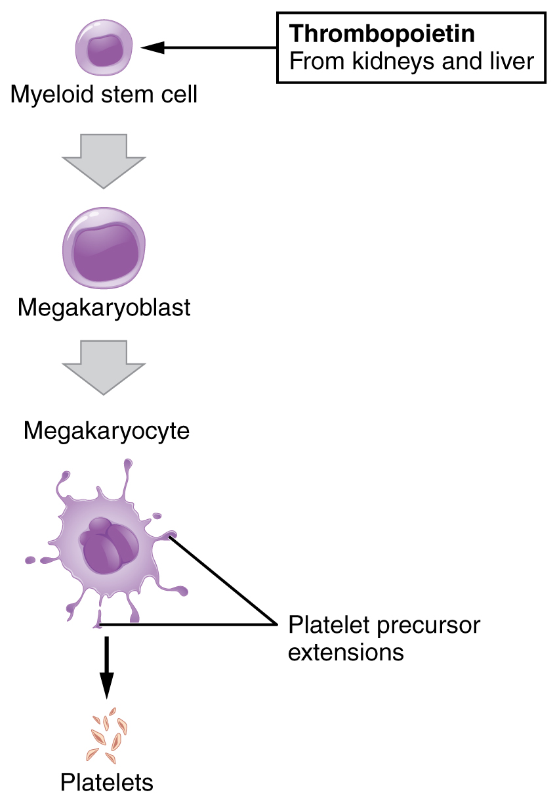
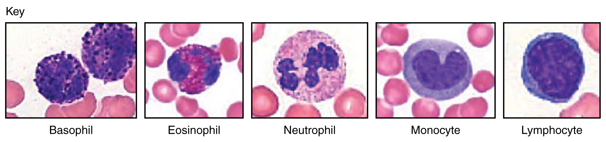
ViewUniversity of Michigan Webscopesand explore the blood slides in greater detail. The Webscope feature allows you to move the slides as you would with a mechanical stage. You can increase and decrease the magnification. There is a chance to review each of the leukocytes individually after you have attempted to identify them from the first two blood smears. In addition, there are a few multiple choice questions.
Are you able to recognize and identify the various formed elements? You will need to do this is a systematic manner, scanning along the image. The standard method is to use a grid, but this is not possible with this resource. Try constructing a simple table with each leukocyte type and then making a mark for each cell type you identify. Attempt to classify at least 50 and perhaps as many as 100 different cells. Based on the percentage of cells that you count, do the numbers represent a normal blood smear or does something appear to be abnormal?
📖 OpenStax Anatomy & Physiology 2e, Section 18.5. openstax.org · CC BY 4.0
- Describe the three mechanisms involved in hemostasis
- Explain how the extrinsic and intrinsic coagulation pathways lead to the common pathway, and the coagulation factors involved in each
- Discuss disorders affecting hemostasis
Platelets are key players inhemostasis, the process by which the body seals a ruptured blood vessel and prevents further loss of blood. Although rupture of larger vessels usually requires medical intervention, hemostasis is quite effective in dealing with small, simple wounds. There are three steps to the process: vascular spasm, the formation of a platelet plug, and coagulation (blood clotting). Failure of any of these steps will result inhemorrhage—excessive bleeding.
When a vessel is severed or punctured, or when the wall of a vessel is damaged, vascular spasm occurs. Invascular spasm, the smooth muscle in the walls of the vessel contracts dramatically. This smooth muscle has both circular layers; larger vessels also have longitudinal layers. The circular layers tend to constrict the flow of blood, whereas the longitudinal layers, when present, draw the vessel back into the surrounding tissue, often making it more difficult for a surgeon to locate, clamp, and tie off a severed vessel. The vascular spasm response is believed to be triggered by several chemicals called endothelins that are released by vessel-lining cells and by pain receptors in response to vessel injury. This phenomenon typically lasts for up to 30 minutes, although it can last for hours.
In the second step, platelets, which normally float free in the plasma, encounter the area of vessel rupture with the exposed underlying connective tissue and collagenous fibers. The platelets begin to clump together, become spiked and sticky, and bind to the exposed collagen and endothelial lining. This process is assisted by a glycoprotein in the blood plasma called von Willebrand factor, which helps stabilize the growingplatelet plug. As platelets collect, they simultaneously release chemicals from their granules into the plasma that further contribute to hemostasis. Among the substances released by the platelets are:
A platelet plug can temporarily seal a small opening in a blood vessel. Plug formation, in essence, buys the body time while more sophisticated and durable repairs are being made. In a similar manner, even modern naval warships still carry an assortment of wooden plugs to temporarily repair small breaches in their hulls until permanent repairs can be made.
Those more sophisticated and more durable repairs are collectively calledcoagulation, the formation of a blood clot. The process is sometimes characterized as a cascade, because one event prompts the next as in a multi-level waterfall. The result is the production of a gelatinous but robust clot made up of a mesh offibrin—an insoluble filamentous protein derived from fibrinogen, the plasma protein introduced earlier—in which platelets and blood cells are trapped. Figure \(\PageIndex{1}\) summarizes the three steps of hemostasis.
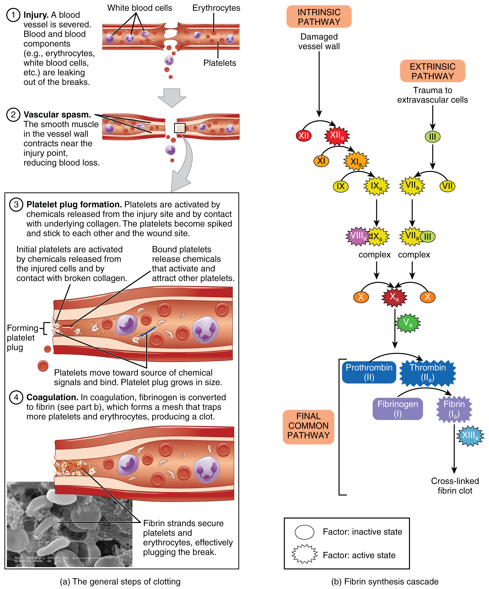
#### Clotting Factors Involved in Coagulation
In the coagulation cascade, chemicals calledclotting factors(or coagulation factors) prompt reactions that activate still more coagulation factors. The process is complex, but is initiated along two basic pathways:
Both of these merge into a third pathway, referred to as the common pathway (see Figure \(\PageIndex{1}\)b). All three pathways are dependent upon the 12 known clotting factors, including Ca2+and vitamin K (Table \(\PageIndex{1}\)). Clotting factors are secreted primarily by the liver and the platelets. The liver requires the fat-soluble vitamin K to produce many of them. Vitamin K (along with biotin and folate) is somewhat unusual among vitamins in that it is not only consumed in the diet but is also synthesized by bacteria residing in the large intestine. The calcium ion, considered factor IV, is derived from the diet and from the breakdown of bone. Some recent evidence indicates that activation of various clotting factors occurs on specific receptor sites on the surfaces of platelets.
The 12 clotting factors are numbered I through XIII according to the order of their discovery. Factor VI was once believed to be a distinct clotting factor, but is now thought to be identical to factor V. Rather than renumber the other factors, factor VI was allowed to remain as a placeholder and also a reminder that knowledge changes over time.
| Factor number | Name | Type of molecule | Source | Pathway(s) |
|---|---|---|---|---|
| I | Fibrinogen | Plasma protein | Liver | Common; converted into fibrin |
| II | Prothrombin | Plasma protein | Liver* | Common; converted into thrombin |
| III | Tissue thromboplastin or tissue factor | Lipoprotein mixture | Damaged cells and platelets | Extrinsic |
| IV | Calcium ions | Inorganic ions in plasma | Diet, platelets, bone matrix | Entire process |
| V | Proaccelerin | Plasma protein | Liver, platelets | Extrinsic and intrinsic |
| VI | Not used | Not used | Not used | Not used |
| VII | Proconvertin | Plasma protein | Liver * | Extrinsic |
| VIII | Antihemolytic factor A | Plasma protein factor | Platelets and endothelial cells | Intrinsic; deficiency results in hemophilia A |
| IX | Antihemolytic factor B (plasma thromboplastin component) | Plasma protein | Liver* | Intrinsic; deficiency results in hemophilia B |
| X | Stuart–Prower factor (thrombokinase) | Protein | Liver* | Extrinsic and intrinsic |
| XI | Antihemolytic factor C (plasma thromboplastin antecedent) | Plasma protein | Liver | Intrinsic; deficiency results in hemophilia C |
| XII | Hageman factor | Plasma protein | Liver | Intrinsic; initiates clotting in vitro also activates plasmin |
| XIII | Fibrin-stabilizing factor | Plasma protein | Liver, platelets | Stabilizes fibrin; slows fibrinolysis |
#### Extrinsic Pathway
The quicker responding and more directextrinsic pathway(also known as thetissue factorpathway) begins when damage occurs to the surrounding tissues, such as in a traumatic injury. Upon contact with blood plasma, the damaged extravascular cells, which are extrinsic to the bloodstream, release factor III (thromboplastin). Sequentially, Ca2+then factor VII (proconvertin), which is activated by factor III, are added, forming an enzyme complex. This enzyme complex leads to activation of factor X (Stuart–Prower factor), which activates the common pathway discussed below. The events in the extrinsic pathway are completed in a matter of seconds.
#### Intrinsic Pathway
Theintrinsic pathway(also known as the contact activation pathway) is longer and more complex. In this case, the factors involved are intrinsic to (present within) the bloodstream. The pathway can be prompted by damage to the tissues, resulting from internal factors such as arterial disease; however, it is most often initiated when factor XII (Hageman factor) comes into contact with foreign materials, such as when a blood sample is put into a glass test tube. Within the body, factor XII is typically activated when it encounters negatively charged molecules, such as inorganic polymers and phosphate produced earlier in the series of intrinsic pathway reactions. Factor XII sets off a series of reactions that in turn activates factor XI (antihemolytic factor C or plasma thromboplastin antecedent) then factor IX (antihemolytic factor B or plasma thromboplasmin). In the meantime, chemicals released by the platelets increase the rate of these activation reactions. Finally, factor VIII (antihemolytic factor A) from the platelets and endothelial cells combines with factor IX (antihemolytic factor B or plasma thromboplasmin) to form an enzyme complex that activates factor X (Stuart–Prower factor or thrombokinase), leading to the common pathway. The events in the intrinsic pathway are completed in a few minutes.
Both the intrinsic and extrinsic pathways lead to thecommon pathway, in which fibrin is produced to seal off the vessel. Once factor X has been activated by either the intrinsic or extrinsic pathway, the enzyme prothrombinase converts factor II, the inactive enzyme prothrombin, into the active enzymethrombin. (Note that if the enzyme thrombin were not normally in an inactive form, clots would form spontaneously, a condition not consistent with life.) Then, thrombin converts factor I, the soluble fibrinogen, into the insoluble fibrin protein strands. Factor XIII then stabilizes the fibrin clot.
The stabilized clot is acted upon by contractile proteins within the platelets. As these proteins contract, they pull on the fibrin threads, bringing the edges of the clot more tightly together, somewhat as we do when tightening loose shoelaces (see Figure 18.14a). This process also wrings out of the clot a small amount of fluid calledserum, which is blood plasma without its clotting factors.
To restore normal blood flow as the vessel heals, the clot must eventually be removed.Fibrinolysisis the gradual degradation of the clot. Again, there is a fairly complicated series of reactions that involves factor XII and protein-catabolizing enzymes. During this process, the inactive protein plasminogen is converted into the activeplasmin, which gradually breaks down the fibrin of the clot. Additionally, bradykinin, a vasodilator, is released, reversing the effects of the serotonin and prostaglandins from the platelets. This allows the smooth muscle in the walls of the vessels to relax and helps to restore the circulation.
Ananticoagulantis any substance that opposes coagulation. Several circulating plasma anticoagulants play a role in limiting the coagulation process to the region of injury and restoring a normal, clot-free condition of blood. For instance, a cluster of proteins collectively referred to as the protein C system inactivates clotting factors involved in the intrinsic pathway. TFPI (tissue factor pathway inhibitor) inhibits the conversion of the inactive factor VII to the active form in the extrinsic pathway.Antithrombininactivates factor X and opposes the conversion of prothrombin (factor II) to thrombin in the common pathway. And as noted earlier, basophils releaseheparin, a short-acting anticoagulant that also opposes prothrombin. Heparin is also found on the surfaces of cells lining the blood vessels. A pharmaceutical form of heparin is often administered therapeutically, for example, in surgical patients at risk for blood clots.
View these animations to explore the intrinsic, extrinsic, and common pathways that are involved the process of coagulation. The coagulation cascade restores hemostasis by activating coagulation factors in the presence of an injury. How does the endothelium of the blood vessel walls prevent the blood from coagulating as it flows through the blood vessels?
Either an insufficient or an excessive production of platelets can lead to severe disease or death. As discussed earlier, an insufficient number of platelets, called thrombocytopenia, typically results in the inability of blood to form clots. This can lead to excessive bleeding, even from minor wounds.
Another reason for failure of the blood to clot is the inadequate production of functional amounts of one or more clotting factors. This is the case in the genetic disorderhemophilia, which is actually a group of related disorders, the most common of which is hemophilia A, accounting for approximately 80 percent of cases. This disorder results in the inability to synthesize sufficient quantities of factor VIII. Hemophilia B is the second most common form, accounting for approximately 20 percent of cases. In this case, there is a deficiency of factor IX. Both of these defects are linked to the X chromosome and are typically passed from a healthy (carrier) female to their male offspring, since males are XY. Females would need to inherit a defective gene from each parent to manifest the disease, since they are XX. Patients with hemophilia bleed from even minor internal and external wounds, and leak blood into joint spaces after exercise and into urine and stool. Hemophilia C is a rare condition that is triggered by an autosomal (not sex) chromosome that renders factor XI nonfunctional. It is not a true recessive condition, since even individuals with a single copy of the mutant gene show a tendency to bleed. Regular infusions of clotting factors isolated from healthy donors can help prevent bleeding in hemophiliac patients. At some point, genetic therapy will become a viable option.
In contrast to the disorders characterized by coagulation failure is thrombocytosis, also mentioned earlier, a condition characterized by excessive numbers of platelets that increases the risk for excessive clot formation, a condition known asthrombosis. Athrombus(plural = thrombi) is an aggregation of platelets, erythrocytes, and even WBCs typically trapped within a mass of fibrin strands. While the formation of a clot is normal following the hemostatic mechanism just described, thrombi can form within an intact or only slightly damaged blood vessel. In a large vessel, a thrombus will adhere to the vessel wall and decrease the flow of blood, and is referred to as a mural thrombus. In a small vessel, it may actually totally block the flow of blood and is termed an occlusive thrombus. Thrombi are most commonly caused by vessel damage to the endothelial lining, which activates the clotting mechanism. These may include venous stasis, when blood in the veins, particularly in the legs, remains stationary for long periods. This is one of the dangers of long airplane flights in crowded conditions and may lead to deep vein thrombosis. Thrombophilia, also called hypercoagulation, is a condition in which there is a tendency to form thrombosis. This may be familial (genetic) or acquired. Acquired forms include the autoimmune disease lupus, immune reactions to heparin, polycythemia vera, thrombocytosis, sickle cell disease, pregnancy, and even obesity. A thrombus can seriously impede blood flow to or from a region and will cause a local increase in blood pressure. If flow is to be maintained, the heart will need to generate a greater pressure to overcome the resistance.
When a portion of a thrombus breaks free from the vessel wall and enters the circulation, it is referred to as anembolus. An embolus that is carried through the bloodstream can be large enough to block a vessel critical to a major organ. When it becomes trapped, an embolus is called an embolism. In the heart, brain, or lungs, an embolism may accordingly cause a heart attack, a stroke, or a pulmonary embolism. These are medical emergencies.
Among the many known biochemical activities of aspirin is its role as an anticoagulant. Aspirin (acetylsalicylic acid) is very effective at inhibiting the aggregation of platelets. It is routinely administered during a heart attack or stroke to reduce the adverse effects. Physicians sometimes recommend that patients at risk for cardiovascular disease take a low dose of aspirin on a daily basis as a preventive measure. However, aspirin can also lead to serious side effects, including increasing the risk of ulcers. A patient is well advised to consult a physician before beginning any aspirin regimen.
A class of drugs collectively known as thrombolytic agents can help speed up the degradation of an abnormal clot. If a thrombolytic agent is administered to a patient within 3 hours following a thrombotic stroke, the patient’s prognosis improves significantly. However, some strokes are not caused by thrombi, but by hemorrhage. Thus, the cause must be determined before treatment begins. Tissue plasminogen activator is an enzyme that catalyzes the conversion of plasminogen to plasmin, the primary enzyme that breaks down clots. It is released naturally by endothelial cells but is also used in clinical medicine. New research is progressing using compounds isolated from the venom of some species of snakes, particularly vipers and cobras, which may eventually have therapeutic value as thrombolytic agents.
📖 OpenStax Anatomy & Physiology 2e, Section 18.6. openstax.org · CC BY 4.0
- Describe the two basic physiological consequences of transfusion of incompatible blood
- Compare and contrast ABO and Rh blood groups
- Identify which blood groups may be safely transfused into patients with different ABO types
- Discuss the pathophysiology of hemolytic disease of the newborn
Blood transfusions in humans were risky procedures until the discovery of the major human blood groups by Karl Landsteiner, an Austrian biologist and physician, in 1900. Until that point, physicians did not understand that death sometimes followed blood transfusions, when the type of donor blood infused into the patient was incompatible with the patient’s own blood. Blood groups are determined by the presence or absence of specific marker molecules on the plasma membranes of erythrocytes. With their discovery, it became possible for the first time to match patient-donor blood types and prevent transfusion reactions and deaths.
Antigens are substances that the body does not recognize as belonging to the “self” and that therefore trigger a defensive response from the leukocytes of the immune system. (Seek more content for additional information on immunity.) Here, we will focus on the role of immunity in blood transfusion reactions. With RBCs in particular, you may see the antigens referred to as isoantigens or agglutinogens (surface antigens) and the antibodies referred to as isoantibodies or agglutinins. In this chapter, we will use the more common terms antigens and antibodies.
Antigens are generally large proteins, but may include other classes of organic molecules, including carbohydrates, lipids, and nucleic acids. Following an infusion of incompatible blood, erythrocytes with foreign antigens appear in the bloodstream and trigger an immune response. Proteins called antibodies (immunoglobulins), which are produced by certain B lymphocytes called plasma cells, attach to the antigens on the plasma membranes of the infused erythrocytes and cause them to adhere to one another.
More than 50 antigens have been identified on erythrocyte membranes, but the most significant in terms of their potential harm to patients are classified in two groups: the ABO blood group and the Rh blood group.
Although theABO blood groupname consists of three letters, ABO blood typing designates the presence or absence of just two antigens, A and B. Both are glycoproteins. People whose erythrocytes have A antigens on their erythrocyte membrane surfaces are designated blood type A, and those whose erythrocytes have B antigens are blood type B. People can also have both A and B antigens on their erythrocytes, in which case they are blood type AB. People with neither A nor B antigens are designated blood type O. ABO blood types are genetically determined.
The body must be exposed to a foreign antigen before an antibody can be produced. ABO blood group antigens are found in foods and microbes throughout nature. Thus, the human immune system is exposed to A and B antigens at an early age and antibodies are formed naturally. Individuals with type A blood—without any prior exposure to incompatible blood—have naturally-formed antibodies to the B antigen circulating in their blood plasma. These antibodies, referred to as anti-B antibodies, will cause agglutination and hemolysis if they ever encounter erythrocytes with B antigens. Similarly, an individual with type B blood has naturally-formed anti-A antibodies. Individuals with type AB blood, which has both antigens, do not have naturally-formed antibodies to either of these. People with type O blood lack antigens A and B on their erythrocytes, but both anti-A and anti-B antibodies circulate in their blood plasma.
TheRh blood groupis classified according to the presence or absence of a second erythrocyte antigen identified as Rh. (It was first discovered in a type of primate known as a rhesus macaque, which is often used in research, because its blood is similar to that of humans.) Although dozens of Rh antigens have been identified, only one, designated D, is clinically important. Those who have the Rh D antigen present on their erythrocytes—about 85 percent of Americans—are described as Rh positive (Rh+) and those who lack it are Rh negative (Rh−). Note that the Rh group is distinct from the ABO group, so any individual, no matter their ABO blood type, may have or lack this Rh antigen. When identifying a patient’s blood type, the Rh group is designated by adding the word positive or negative to the ABO type. For example, A positive (A+) means ABO group A blood with the Rh antigen present, and AB negative (AB−) means ABO group AB blood without the Rh antigen.
Table \(\PageIndex{1}\) summarizes the distribution of the ABO and Rh blood types within the United States.
| Blood Type | Asian | Black non-Hispanic | Hispanic | North American Indian | White non-Hispanic |
|---|---|---|---|---|---|
| A+ | 27.3 | 24.0 | 28.7 | 31.3 | 33.0 |
| A− | 0.5 | 1.9 | 2.4 | 3.8 | 6.8 |
| B+ | 25.0 | 18.4 | 9.2 | 7.0 | 9.1 |
| B− | 0.4 | 1.3 | 0.7 | 0.9 | 1.8 |
| AB+ | 7.0 | 4.0 | 2.3 | 2.2 | 3.4 |
| AB− | 0.1 | 0.3 | 0.2 | 0.3 | 0.7 |
| O+ | 39.0 | 46.6 | 52.6 | 50.0 | 37.2 |
| O− | 0.7 | 3.6 | 3.9 | 4.7 | 8.0 |
In contrast to the ABO group antibodies, which are preformed, antibodies to the Rh antigen are produced only in Rh−individuals after exposure to the antigen. This process, called sensitization, occurs following a transfusion with Rh-incompatible blood or, more commonly, with the birth of an Rh+baby to an Rh−person. Problems are rare in a first pregnancy, since the baby’s Rh+cells rarely cross the placenta (the organ of gas and nutrient exchange between the fetus and the pregnant person). However, during or immediately after birth, the Rh−parent can be exposed to the baby’s Rh+cells (Figure \(\PageIndex{1}\)). Research has shown that this occurs in about 13−14 percent of such pregnancies. After exposure, the immune system of the person who has given birth begins to generate anti-Rh antibodies. If the same person should then become pregnant with another Rh+baby, the Rh antibodies they have produced can cross the placenta into the fetal bloodstream and destroy the fetal RBCs. This condition, known ashemolytic disease of the newborn (HDN)or erythroblastosis fetalis, may cause anemia in mild cases, but the agglutination and hemolysis can be so severe that without treatment the fetus may die in the womb or shortly after birth.
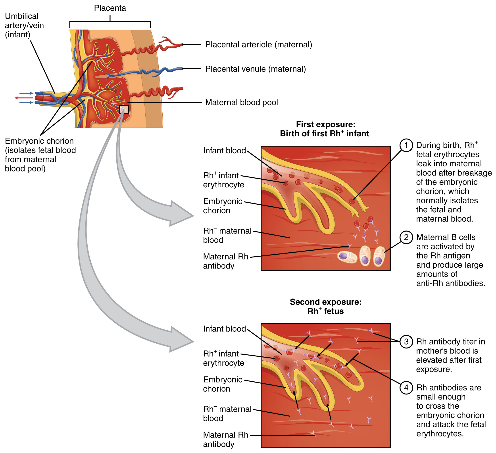
A drug known as RhoGAM, short for Rh immune globulin, can temporarily prevent the development of Rh antibodies in the Rh−parent, thereby averting this potentially serious disease for the fetus. RhoGAM antibodies destroy any fetal Rh+erythrocytes that may cross the placental barrier. RhoGAM is normally administered to Rh−pregnant people during weeks 26−28 of pregnancy and within 72 hours following birth. It has proven remarkably effective in decreasing the incidence of HDN. Earlier we noted that the incidence of HDN in an Rh+subsequent pregnancy to an Rh−person is about 13–14 percent without preventive treatment. Since the introduction of RhoGAM in 1968, the incidence has dropped to about 0.1 percent in the United States.
Clinicians are able to determine a patient’s blood type quickly and easily using commercially prepared antibodies. An unknown blood sample is allocated into separate wells. Into one well a small amount of anti-A antibody is added, and to another a small amount of anti-B antibody. If the antigen is present, the antibodies will cause visible agglutination of the cells (Figure \(\PageIndex{2}\)). The blood should also be tested for Rh antibodies.
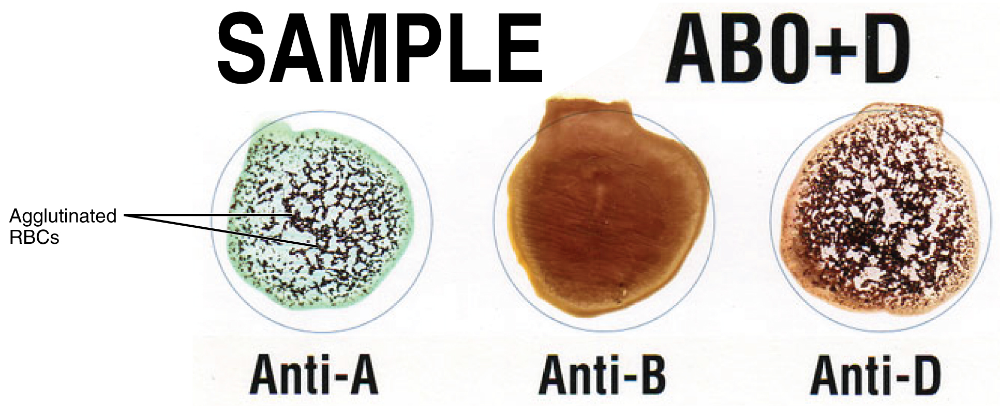
To avoid transfusion reactions, it is best to transfuse only matching blood types; that is, a type B+recipient should ideally receive blood only from a type B+donor and so on. That said, in emergency situations, when acute hemorrhage threatens the patient’s life, there may not be time for cross matching to identify blood type. In these cases, blood from auniversal donor—an individual with type O−blood—may be transfused. Recall that type O erythrocytes do not display A or B antigens. Thus, anti-A or anti-B antibodies that might be circulating in the patient’s blood plasma will not encounter any erythrocyte surface antigens on the donated blood and therefore will not be provoked into a response. One problem with this designation of universal donor is if the O−individual had prior exposure to Rh antigen, Rh antibodies may be present in the donated blood. Also, introducing type O blood into an individual with type A, B, or AB blood will nevertheless introduce antibodies against both A and B antigens, as these are always circulating in the type O blood plasma. This may cause problems for the recipient, but because the volume of blood transfused is much lower than the volume of the patient’s own blood, the adverse effects of the relatively few infused plasma antibodies are typically limited. Rh factor also plays a role. If Rh−individuals receiving blood have had prior exposure to Rh antigen, antibodies for this antigen may be present in the blood and trigger agglutination to some degree. Although it is always preferable to cross match a patient’s blood before transfusing, in a true life-threatening emergency situation, this is not always possible, and these procedures may be implemented.
A patient with blood type AB+is known as theuniversal recipient. This patient can theoretically receive any type of blood, because the patient’s own blood—having both A and B antigens on the erythrocyte surface—does not produce anti-A or anti-B antibodies. In addition, an Rh+patient can receive both Rh+and Rh−blood. However, keep in mind that the donor’s blood will contain circulating antibodies, again with possible negative implications. Figure \(\PageIndex{3}\) summarizes the blood types and compatibilities.
At the scene of multiple-vehicle accidents, military engagements, and natural or human-caused disasters, many victims may suffer simultaneously from acute hemorrhage, yet type O blood may not be immediately available. In these circumstances, medics may at least try to replace some of the volume of blood that has been lost. This is done by intravenous administration of a saline solution that provides fluids and electrolytes in proportions equivalent to those of normal blood plasma. Research is ongoing to develop a safe and effective artificial blood that would carry out the oxygen-carrying function of blood without the RBCs, enabling transfusions in the field without concern for incompatibility. These blood substitutes normally contain hemoglobin- as well as perfluorocarbon-based oxygen carriers.
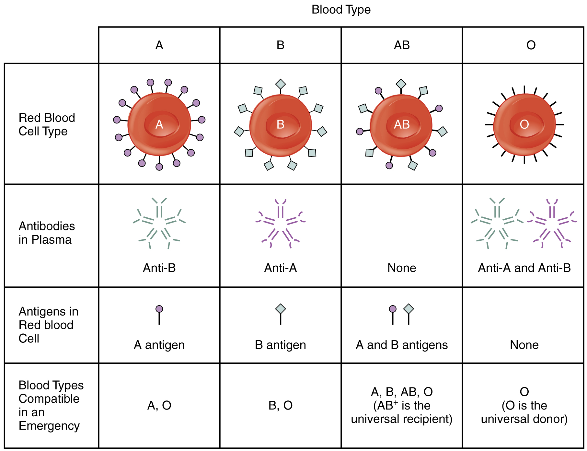
📖 OpenStax Anatomy & Physiology 2e, Section 18.7. openstax.org · CC BY 4.0
| Section | Title |
|---|---|
| 18.2 | 18.2: An Overview of Blood |
| 18.3 | 18.3: Production of the Formed Elements |
| 18.4 | 18.4: Erythrocytes |
| 18.5 | 18.5: Leukocytes and Platelets |
| 18.6 | 18.6: Hemostasis |
| 18.7 | 18.7: Blood Typing |